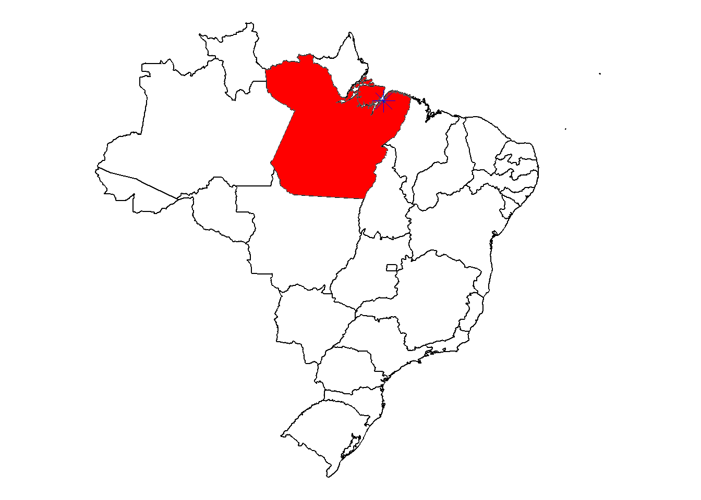
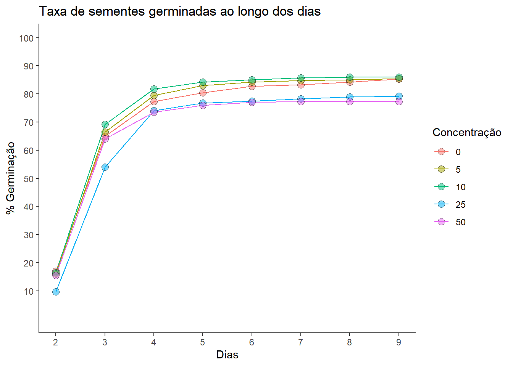

library(dplyr)
library(ggplot2)
library(rnaturalearth)
library(remotes)
library(rnaturalearthhires)
library(tidyverse)
library(ggplot2)
library(ggthemes)Uso de diferentes concentrações de extrato de tiririca na germinação de jambu
Esta página foi criado com o objetivo de disponibilizar os códigos do trabalho final da disciplina Análise e Visualização de Dados em Fitopatologia (FIP606), ofertada pelo Programa de Pós-Graduação em Fitopatologia da UFV e ministrada pelo professor Emerson Del Ponte.
Neste projeto, foi analisada a germinação de sementes de jambu (Acmella oleracea) sob a influência de diferentes concentrações do extrato aquoso de tiririca (Cyperus rotundus). Foram aplicados cinco tratamentos de germinação: controle (0%), 5%, 10%, 25% e 50%. O experimento contou com oito repetições para cada tratamento, com delineamento inteiramente casualizado. Na análise estatística foram avaliadas quatro variáveis: Taxa de Germinação, Taxa de Mortalidade, Índice de velocidade de germinação (IVG) e Massa Seca.
Carregando os pacotes
Carregando os dados
library(readxl)
dados <- read_excel("Dados.xlsx")library(readxl)
dados1 <- read_excel("Dados.xlsx", sheet = 6)Localização do experimento
Universidade Federal Rural da Amazônia (UFRA) - Belém/PA
BRA <- ne_states(country = "Brazil", returnclass = "sf")
PA <- BRA |>
filter(name_en == "Pará")
star <- data.frame(
x = -48.5,
y = -1.45
)
ggplot(BRA) +
geom_sf(fill = "white", color = "black", linewidth = 0.5) +
geom_sf(data = PA, fill = "red") +
geom_point(data = star, aes(x = x, y = y), shape = 8, color = "blue", size = 5) +
theme_void()
Visualização da germinação ao longo dos dias após a montagem do ensaio
media <- dados1 |>
group_by(Tratamento) |>
summarise(Dia2=mean(Dia2),
Dia3=mean(Dia3),
Dia4=mean(Dia4),
Dia5=mean(Dia5),
Dia6=mean(Dia6),
Dia7=mean(Dia7),
Dia8=mean(Dia8),
Dia9=mean(Dia9))
media2 <- data.frame(Tratamento = rep(media$Tratamento, each = 8),
Dia = rep(2:9,5),
Variavel = rbind(t(media[1,2:9]),t(media[2,2:9]), t(media[3,2:9]),t(media[4,2:9]),t(media[5,2:9])))
media2$Tratamento <- as.character(media2$Tratamento)ggplot(data = media2, aes(x=Dia, y=Variavel)) +
geom_line(aes(group = Tratamento, color = Tratamento), size = 0.5) +
geom_point(aes(fill = Tratamento), shape = 21, alpha = 0.5, size = 3) +
scale_y_continuous(breaks = seq(10,100,10), limits = c(0,100)) +
scale_x_continuous(breaks = seq(2,9,1)) +
labs(x = "Dias", y = "% Germinação", title = "Taxa de sementes germinadas ao longo dos dias", color = "Concentração", fill = "Concentração") +
scale_color_discrete(limits = as.character(c(0, 5, 10, 25, 50))) +
scale_fill_discrete(limits = as.character(c(0, 5, 10, 25, 50))) +
theme_classic()
Gráfico 3D
library(plotly)
library(dplyr)
media2 <- data.frame(
Tratamento = rep(dados1$Tratamento, each = 8),
Dia = rep(2:9, 5),
Variavel = rbind(t(media[1,2:9]), t(media[2,2:9]), t(media[3,2:9]), t(media[4,2:9]), t(media[5,2:9]))
)
media2$Tratamento <- as.numeric(media2$Tratamento)
media2 <- media2 %>%
group_by(Tratamento, Dia) %>%
summarize(Variavel = mean(Variavel))
plot_ly() %>%
add_trace(data = media2[media2$Tratamento == 0, ], x = ~Tratamento, y = ~Dia, z = ~Variavel,
type = "scatter3d", mode = "lines+markers", color = I("#1f77b4"),
legendgroup = "Tratamento 1", name = "Concentração 0%") %>%
add_trace(data = media2[media2$Tratamento == 5, ], x = ~Tratamento, y = ~Dia, z = ~Variavel,
type = "scatter3d", mode = "lines+markers", color = I("#d62728"),
legendgroup = "Tratamento 2", name = "Concentração 5%") %>%
add_trace(data = media2[media2$Tratamento == 10, ], x = ~Tratamento, y = ~Dia, z = ~Variavel,
type = "scatter3d", mode = "lines+markers", color = I("#2ca02c"),
legendgroup = "Tratamento 3", name = "Concentração 10%") %>%
add_trace(data = media2[media2$Tratamento == 25, ], x = ~Tratamento, y = ~Dia, z = ~Variavel,
type = "scatter3d", mode = "lines+markers", color = I("purple"),
legendgroup = "Tratamento 4", name = "Concentração 25%") %>%
add_trace(data = media2[media2$Tratamento == 50, ], x = ~Tratamento, y = ~Dia, z = ~Variavel,
type = "scatter3d", mode = "lines+markers", color = I("orange"),
legendgroup = "Tratamento 5", name = "Concentração 50%") %>%
layout(scene = list(
xaxis = list(title = "Concentração"),
yaxis = list(title = "Dias"),
zaxis = list(title = "%Germinação")
),
title = "Número de sementes germinadas ao longo dos dias")